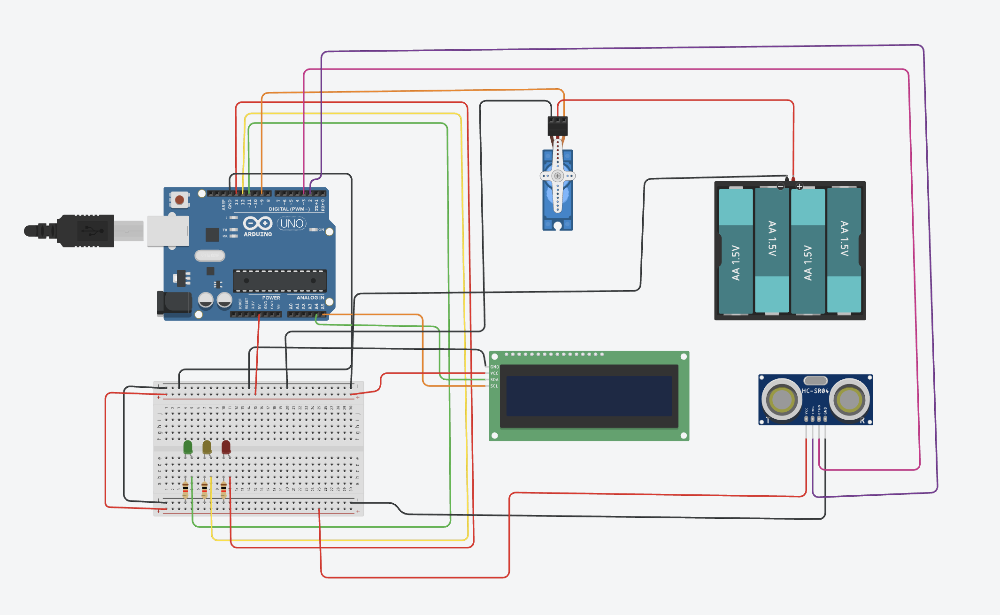

Guía de trabajo
Proyecto: Estacionamiento Inteligente con Arduino
Nivel: Bachillerato Tecnológico
Duración sugerida: 3 a 4 sesiones de 2 horas (ajustable según grupo)
Recursos principales: Arduino UNO, sensor ultrasónico HC-SR04, módulo semáforo o LEDs, servomotor SG90, LCD 16x2 con I2C para la versión completa, protoboard, cables, resistencias y cable USB.
Primero completa tus respuestas en esta hoja. Cuando termines, usa el botón para abrir la versión de impresión y guardar un PDF con tus propias respuestas.
1. Propósito del proyecto
Diseñar y construir un sistema de estacionamiento inteligente capaz de detectar la presencia de un vehículo mediante un sensor ultrasónico, indicar disponibilidad con un semáforo, controlar una barrera con un servomotor y mostrar mensajes informativos en una pantalla LCD, utilizando Arduino como unidad de control.
2. Aprendizajes esperados
- Comprender el funcionamiento del sensor ultrasónico y su uso para medición de distancia.
- Integrar actuadores (LED y servomotor) a un sistema automatizado.
- Utilizar una pantalla LCD para mostrar información en tiempo real.
- Programar en Arduino aplicando estructuras condicionales y funciones.
- Probar, ajustar y documentar un sistema electrónico funcional.
3. Contextualización
Los estacionamientos modernos utilizan sensores y sistemas automatizados para optimizar el acceso de vehículos, mejorar la seguridad y agilizar el flujo. Este proyecto simula un sistema real a pequeña escala, acercando al alumno a aplicaciones prácticas de la electrónica y la automatización.
4. Descripción general del sistema
- El sensor ultrasónico detecta la distancia de un objeto (vehículo).
- Si la distancia es menor al valor definido, el semáforo cambia a rojo, el servomotor baja la barrera y la pantalla LCD muestra “Estacionamiento ocupado”.
- Si no hay vehículo, el semáforo cambia a verde, la barrera se mantiene abierta y la pantalla LCD muestra “Espacio disponible”.

Video de referencia
5. Reglas de trabajo
- Trabajar con orden y cuidado del material.
- Verificar conexiones antes de energizar el circuito.
- No modificar el código de otro equipo sin autorización.
- Registrar evidencias del proceso (fotos, videos, capturas).
6. Evidencias a entregar
- Diagrama de conexiones (foto o esquema).
- Código funcional comentado.
- Video corto del sistema en funcionamiento.
- Conclusión individual del alumno.
Instrucción para ingresar a Tinkercad
- Abre tu navegador de internet (Chrome, Edge o Firefox).
- Ingresa a la siguiente dirección:
https://www.tinkercad.com. - Haz clic en Iniciar sesión (Sign in).
- Selecciona una de estas opciones para entrar: Cuenta de Google, Cuenta de Microsoft o Cuenta de Autodesk.
- Una vez dentro de la plataforma, entra a la sección Circuits (Circuitos).
- Presiona el botón Create new Circuit (Crear nuevo circuito).
- Dentro del simulador podrás agregar un Arduino Uno, sensor ultrasónico, LEDs, servomotor, LCD I2C y escribir el código del programa.
- Finalmente presiona Start Simulation para ejecutar el circuito y verificar que funcione correctamente.
Indicaciones importantes:
- Guarda tu proyecto con el nombre:
EstacionamientoInteligente_Arduino_TuNombre. - Verifica que el semáforo, la barrera y la pantalla LCD respondan correctamente.
- Comprueba que el circuito no tenga errores de conexión.
PRACTICARIO
Práctica 1: Conociendo los componentes
Objetivo: Identificar y comprender la función de cada componente del proyecto.
| Componente | Función dentro del sistema |
|---|---|
| Sensor ultrasónico HC-SR04 | |
| Servomotor | |
| Pantalla LCD 16x2 |
Práctica 2: Sensor ultrasónico y medición de distancia
Objetivo: Medir distancias usando el sensor ultrasónico.
Práctica 3: Control del semáforo
Objetivo: Controlar LEDs según la distancia detectada.
Práctica 4: Control de barrera con servomotor
Objetivo: Simular la apertura y cierre de la barrera del estacionamiento.
Práctica 5: Uso de pantalla LCD
Objetivo: Mostrar información del sistema en una pantalla LCD.
Práctica 6: Integración del sistema completo
Objetivo: Integrar todos los componentes en un solo programa.
Reflexión final
Código del proyecto
#include <Servo.h>
#include <Wire.h>
#include <LiquidCrystal_I2C.h>
LiquidCrystal_I2C lcd(0x27, 16, 2);
// LEDs (semaforo)
const int rojo = 13;
const int amarillo = 12;
const int verde = 11;
// Ultrasonico HC-SR04
const int TRIG = 2;
const int ECHO = 3;
// Servo
Servo barrera;
const int pinServo = 9;
const int POS_ABIERTO = 0;
const int POS_CERRADO = 90;
// Config
const int UMBRAL_CM = 25;
const int HISTERESIS = 10;
long medirCM() {
digitalWrite(TRIG, LOW);
delayMicroseconds(2);
digitalWrite(TRIG, HIGH);
delayMicroseconds(10);
digitalWrite(TRIG, LOW);
long dur = pulseIn(ECHO, HIGH, 30000);
if (dur == 0) return 999;
long cm = (long)(dur * 0.0343 / 2.0);
if (cm < 0) cm = 999;
if (cm > 999) cm = 999;
return cm;
}
void setLeds(bool r, bool y, bool g) {
digitalWrite(rojo, r);
digitalWrite(amarillo, y);
digitalWrite(verde, g);
}
void mostrarMensaje(const char* l1, const char* l2, int tiempo) {
lcd.clear();
lcd.setCursor(0, 0); lcd.print(l1);
lcd.setCursor(0, 1); lcd.print(l2);
delay(tiempo);
}
void cuentaRegresiva(int segundos, int ledPin, int posicionServo,
const char* msg1, const char* msg2,
bool moverServoAlFinal = false) {
digitalWrite(rojo, LOW);
digitalWrite(amarillo, LOW);
digitalWrite(verde, LOW);
digitalWrite(ledPin, HIGH);
if (!moverServoAlFinal) {
barrera.write(posicionServo);
}
for (int i = segundos; i >= 0; i--) {
lcd.clear();
lcd.setCursor(0, 0); lcd.print(msg1);
lcd.setCursor(0, 1);
lcd.print(msg2);
lcd.print(" ");
lcd.print(i);
lcd.print("s");
delay(1000);
}
if (moverServoAlFinal) {
barrera.write(posicionServo);
}
digitalWrite(ledPin, LOW);
}
void setup() {
lcd.init();
lcd.backlight();
pinMode(rojo, OUTPUT);
pinMode(amarillo, OUTPUT);
pinMode(verde, OUTPUT);
pinMode(TRIG, OUTPUT);
pinMode(ECHO, INPUT);
barrera.attach(pinServo);
barrera.write(POS_CERRADO);
setLeds(true, false, false);
mostrarMensaje("Estacionamiento", "Sistema listo", 1500);
}
void loop() {
long cm = medirCM();
barrera.write(POS_CERRADO);
setLeds(true, false, false);
lcd.clear();
lcd.setCursor(0, 0);
lcd.print("Acceso cerrado");
lcd.setCursor(0, 1);
lcd.print("Dist: ");
lcd.print(cm);
lcd.print("cm");
delay(200);
if (cm <= UMBRAL_CM) {
cuentaRegresiva(5, verde, POS_ABIERTO, "Bienvenido!", "Acceso abierto:", false);
mostrarMensaje("Pase, por favor", "Gracias!", 1200);
cuentaRegresiva(2, amarillo, POS_CERRADO, "Atencion!", "Cerrando en:", true);
mostrarMensaje("Barrera bajando", "Espere un momento", 1200);
cuentaRegresiva(5, rojo, POS_CERRADO, "Acceso denegado", "Espere luz verde:", false);
mostrarMensaje("No pase", "Espere luz verde", 1200);
while (medirCM() <= (UMBRAL_CM + HISTERESIS)) {
setLeds(true, false, false);
lcd.clear();
lcd.setCursor(0, 0); lcd.print("Retire el auto");
lcd.setCursor(0, 1); lcd.print("Para reiniciar");
delay(400);
}
lcd.clear();
}
}Observación docente
Este proyecto refuerza la lógica de programación, la integración hardware-software y el pensamiento tecnológico aplicado a situaciones reales.
Versión adicional sin pantalla LCD
Esta variante no sustituye la práctica original. Se agrega como una segunda opción de armado para trabajar el mismo sistema de acceso automatizado cuando no se cuenta con pantalla LCD. La lógica se apoya solamente en el sensor ultrasónico, el semáforo de LEDs y la barrera con servomotor.
- Estado inicial: LED rojo encendido y barrera cerrada.
- Detección de vehículo: si el objeto está a 25 cm o menos, se activa la secuencia.
- Luz verde: acceso permitido y la barrera se abre.
- Luz amarilla: advertencia de cierre de la barrera.
- Luz roja: acceso cerrado hasta que el vehículo se retire de la zona de detección.
Conexiones de la versión sin pantalla
Usa la captura compartida como referencia visual y confirma estas conexiones antes de energizar el circuito.
| Componente | Conexión |
|---|---|
| Sensor ultrasónico HC-SR04 | TRIG → Pin 2, ECHO → Pin 3, VCC → 5V, GND → GND |
| LED rojo | Ánodo → Pin 13 con resistencia de 220Ω, cátodo → GND |
| LED amarillo | Ánodo → Pin 12 con resistencia de 220Ω, cátodo → GND |
| LED verde | Ánodo → Pin 11 con resistencia de 220Ω, cátodo → GND |
| Servo motor | Señal → Pin 9, alimentación → 5V, GND → GND |
Código de la versión sin pantalla
#include <Servo.h>
// LEDs (semaforo)
const int rojo = 13;
const int amarillo = 12;
const int verde = 11;
// Ultrasonico HC-SR04
const int TRIG = 2;
const int ECHO = 3;
// Servo
Servo barrera;
const int pinServo = 9;
const int POS_ABIERTO = 0;
const int POS_CERRADO = 90;
// Config
const int UMBRAL_CM = 25;
const int HISTERESIS = 10;
// ---- Lectura de distancia ----
long medirCM() {
digitalWrite(TRIG, LOW);
delayMicroseconds(2);
digitalWrite(TRIG, HIGH);
delayMicroseconds(10);
digitalWrite(TRIG, LOW);
long dur = pulseIn(ECHO, HIGH, 30000);
if (dur == 0) return 999;
long cm = (long)(dur * 0.0343 / 2.0);
if (cm < 0) cm = 999;
if (cm > 999) cm = 999;
return cm;
}
// ---- LEDs ----
void setLeds(bool r, bool y, bool g) {
digitalWrite(rojo, r);
digitalWrite(amarillo, y);
digitalWrite(verde, g);
}
// ---- Cuenta regresiva ----
void cuentaRegresiva(int segundos, int ledPin, int posicionServo, bool moverServoAlFinal = false) {
// apagar todos
setLeds(false, false, false);
// prender LED activo
digitalWrite(ledPin, HIGH);
// mover servo al inicio
if (!moverServoAlFinal) {
barrera.write(posicionServo);
}
for (int i = segundos; i >= 0; i--) {
delay(1000);
}
// mover servo al final (amarillo)
if (moverServoAlFinal) {
barrera.write(posicionServo);
}
digitalWrite(ledPin, LOW);
}
void setup() {
// LEDs
pinMode(rojo, OUTPUT);
pinMode(amarillo, OUTPUT);
pinMode(verde, OUTPUT);
// Ultrasonico
pinMode(TRIG, OUTPUT);
pinMode(ECHO, INPUT);
// Servo
barrera.attach(pinServo);
barrera.write(POS_CERRADO);
setLeds(true, false, false);
}
void loop() {
long cm = medirCM();
// Estado de espera
barrera.write(POS_CERRADO);
setLeds(true, false, false);
delay(200);
// Si llega un auto
if (cm <= UMBRAL_CM) {
// VERDE
cuentaRegresiva(5, verde, POS_ABIERTO, false);
// AMARILLO
cuentaRegresiva(2, amarillo, POS_CERRADO, true);
// ROJO
cuentaRegresiva(5, rojo, POS_CERRADO, false);
// Esperar a que se retire
while (medirCM() <= (UMBRAL_CM + HISTERESIS)) {
setLeds(true, false, false);
delay(400);
}
}
}Practicario adicional: versión sin pantalla
Practicario: Sistema de Acceso Automatizado con Semáforo y Sensor Ultrasónico.
Propósito de la práctica
Desarrollar un sistema automatizado que controle el acceso de un vehículo mediante el uso de sensores, actuadores y lógica de control, simulando el funcionamiento de una barrera de estacionamiento.
Competencias a desarrollar
- Uso de sensores (ultrasónico HC-SR04).
- Control de actuadores (servo motor).
- Implementación de lógica condicional.
- Manejo de salidas digitales (semáforo con LEDs).
- Comprensión de estados en sistemas automatizados.
Material requerido
- Arduino UNO.
- Sensor ultrasónico HC-SR04.
- Servo motor.
- 3 LEDs: rojo, amarillo y verde.
- Resistencias de 220Ω.
- Protoboard.
- Cables Dupont.
Descripción del sistema
- 🔴 Rojo: acceso cerrado.
- 🟢 Verde: acceso permitido y barrera abierta.
- 🟡 Amarillo: advertencia de cierre.
- Cuando un objeto se detecta a cierta distancia, el sistema permite el acceso, abre la barrera, la cierra automáticamente y espera a que el objeto se retire.
Actividad 1: Conexión del circuito
Instrucciones: Conecta el sensor ultrasónico, los LEDs y el servo siguiendo la tabla de conexiones de esta versión.
Actividad 2: Prueba del sensor ultrasónico
Instrucciones: Carga el código base y observa el comportamiento del sistema.
Actividad 3: Análisis del sistema
Actividad 4: Modificación del sistema
Realiza los siguientes cambios: cambia la distancia de activación a 15 cm, aumenta el tiempo de apertura de la barrera a 8 segundos y reduce el tiempo del semáforo amarillo a 1 segundo.
Actividad 5: Mejora del sistema
Desafío: agrega al menos una mejora al sistema. Puedes elegir entre botón para apertura manual, buzzer de advertencia, parpadeo del LED rojo o movimiento más suave del servo.
Actividad 6: Reflexión
Entregable
- Fotos del circuito.
- Video del funcionamiento.
- Respuestas del practicario.
- Mejora implementada.
Criterios de evaluación
| Criterio | Valor |
|---|---|
| Funcionamiento del sistema | 40% |
| Respuestas del practicario | 20% |
| Modificaciones realizadas | 20% |
| Mejora implementada | 20% |
Firma de revisión
Profesor: ____________________________________